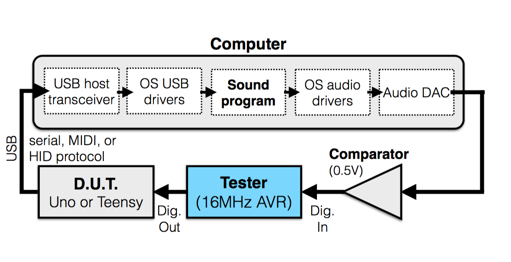

- Log in to post comments
The importance of low and consistent latency in interactive music systems is well-established. So how do commonly used tools for creating digital musical instruments and other tangible interfaces perform in terms of latency from user action to sound output?
In the paper that this website refers to [ McPherson, A., Jack, R.H., Moro, G. "Are our tools fast enough?", NIME 2016 ] we test several common configurations where a microcontroller (e.g. Arduino) communicates with computer-based sound generator (e.g. Max/MSP, Pd). We find that, perhaps surprisingly, almost none of the tested configurations meet generally-accepted guidelines for latency and jitter. To address this limitation, the paper presents a new emqbedded platform, Bela, which is capable of complex audio and sensor processing at submillisecond latency.
What follows is annotations from the lab sessions with details of the setup used.
The results and the files used to generate the plots in this page can be found here.
Measurements: Arduino Uno, software version 1.5.8, upgraded to 1.6.5 for teensy2
Test Device 1: Arduino Uno
Test Device 2: Teensy 2.0
250ms between tests
Computer1:
MacBook Pro, mid 2014
2.7GHz Core i7, 16GB RAM
Max/MSP 6.1.9
Pd-extended 0.43.4 -- using portaudio for audio
Computer2
iMac 21.5inch Mid 2010
3.2GHz Intel Core i3, 4GB RAM
Max/MSP 7
Computer3
MacBook Pro (Retina, 13-inch, Early 2015)
2.9GHz Intel Core i5, 16 GB RAM
MAC OSX El Capitan 10.11.2
JackOSX 0.92 beta3
Pd-extended 0.43.4 -- using jack for audio
Test setup:

Observations:
Delay in Max/MSP is closely tied to GUI actions. Switching which program is at foreground can result in a 70-100ms delay for an individual action. This may be due to qmetro.
Stream without a delay() function results in a much higher latency, probably due to a backlog at the serial port. This appears to be worse for lower baud rates.
Serial events seem to be consistently processed on a hardware-I/O-block basis. Jitter appears to be in consistent units of the hardware block size.
Did not observe a significant effect varying signal vector size in Max/MSP, nor toggling the overdrive options.
Pd shows many audio dropouts with delay of 0 on teensy-stream version (probably too much USB data).
Max is completely unusable with teensy-stream version without delay. Latencies over a second, unpredictable behaviour.
In Max, using overdrive and "scheduler in interrupt" settings substantially improves MIDI jitter. Essentially zero frame jitter for hardware buffer sizes down to 128. 64 and below still exhibit jitter of 1 or more frames.
Raspberry Pi 2 + PureData
Test device: Arduino Uno
250ms between tests
CCRMA Satellite image
pd-extended 0.43.4, running:
for GPIO: latency_test_pi2_gpio_in.pd
for Arduino serial: latency_test_arduino_pi2.pd, serial polling time: 1ms
External soundcard(when used): Focusrite Scarlett 8i6
(the tests labelled "external" used Behringer U-Control UCA222, but I could not find it when I did the second round of tests, so I re-did them all with the Focusrite)
I2C DAC: IQ audio DAC+
Arduino for serial input (when used): Arduino Uno , running Latency_measure_target compiled using Arduino 1.0.1
Audio backend: ALSA (OSS does not show the DAC+, portaudio requires abnormaly large blocksizes to avoid dropouts, Jack does not work with the I2C on the Satellite kernel)
Using pd on the pi2 there are only a few usable combinations of settings.
I first ran a sinewave to test the minimum latency setting without dropouts, then I used this setting for the tests.
Bringing the delay below 22ms with internal soundcard and 10ms with external causes glitches in the audio when running pd-extended with the -rt flag. Running it without such flag allows the extrnal sondcard to be set to 6ms delay. The gpio is polled every block size (uses bang~ to poll). To poll the GPIO a pd external called gpio, shipped with Satellite, is being used. Apparently the external does not export the pin itself, but you need to export it from the command line before running the program.
Raspberry Pi 3 + PureData
Pi3, running raspbian JESSIE, released 2016-03-18
uname -a: Linux raspberry pi 4.1.19+
Pd 0.46 (from apt-get)
Using the [gpio] external binary copied over from the Satellite image.
For the rest, similar considerations as the ones above for Pi2, but with different numbers (see file names)
Xbee->Arduino->Max
The test Arduino Uno's output is connected to an Xbee router. The router sends messages to the Xbee coordinator at the highest sampling rate available (20Hz -> 50ms). The Xbee coordinator is connected to an Arduino Uno running latency_measure_target_xbee which parses the long hex message and sends a 1 or a 0 to its serial output. This is in turn read by Max/Msp.
Xosc -> iMac hotspot -> Max (using OSC-route external)
Some packets get lost from time to time.
XOsc sends digital values only when status changes, but if the packet containing a "1" are lost, the measuring system will hang indefinitely. So in the "digital" measurements you will find some very large values, which correspond to me having to manually send a positive impulse back to the Arduino to make the thing work.
I then tested using analog inputs, which are sent "continuously", at a specified frame rate (labelled "Hz" in the filename). Frame rate should be between 0 and 400Hz (in practice, because of packet loss and network congestion you would always get less than that). I threshold the analog inputs at 0.5 to obtain digital values.
I have a guess for the reason why there are some results in the measured time that are (unsigned)(-1): UDP does not guarantee the delivery nor the delivery order of the packets. Also, it is often the case that more than one input sample is HIGH. If a LOW-HIGH edge is detected because the packets arrived out of order, then this would trigger an audio output, which would set the input of the Arduino high while the Arduino is setting the output high, thus measuring a -1 delay value.
Performance are much worse at 200Hz than at 50Hz or 100Hz (probably network congestion).
Also, while testing this I had Max crashing a few times (don't know if it is related with the network usage or anything else).
Xosc -> router -> iMac Max (using OSC-route external)
Used "Sagemcom - Sky" consumer router, messages sent in unicast to the computer address. When using digital inputs there was never need to reset manually, that is no packets were lost.